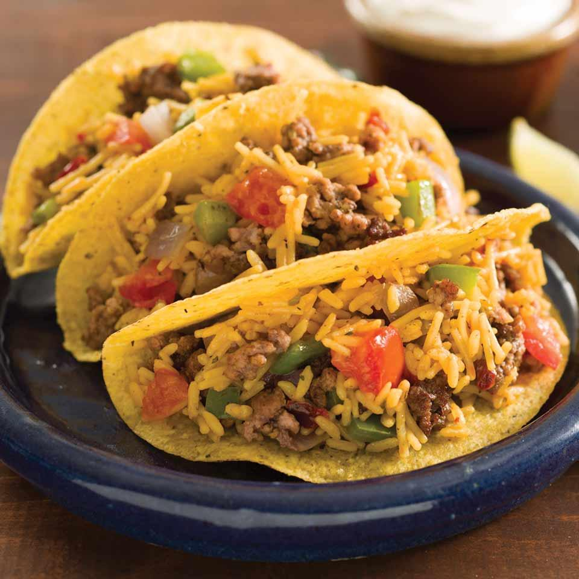

Tacos

Description
The absolute BEST ground beef Tacos! An easy to make
homemade taco seasoning and a secret ingredient that
makes this the most flavorful and juiciest taco meat
EVER! The perfect family weeknight meal that can be
ready in less than 30 minutes!
These classic Ground Beef Tacos feature homemade taco
meat loaded into freshly fried taco shells. Serve up
with all your favorite toppings for an easy family meal
that takes less than 30 minutes!
Ingredients
- Ground Beef
- Tomato Sauce
- Onion Powder
- Garlic Powder
- Pepper
- Salt
- Cumin
- Chili Powder
- Oil
- Butter
- Corn Tortillas
Steps
- Cook the ground beef, cook it up until it’s
completely browned. Drain the grease. Then when we
return to the heat to the stove lower the heat, add
the homemade taco seasoning and a small amount of
tomato sauce.
- Allow the taco meat to simmer briefly in the sauce
to give more flavor.
- Fry the corn tortillas in a small amount of oil in
a medium size skillet. Once fried on both sides,
remove the tortillas and fold in half to form their
shape.
- Fill the taco shells with the cooked beef and any
toppings desired.